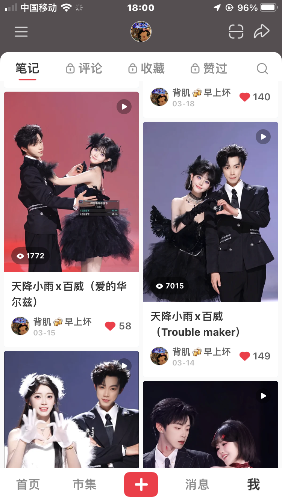
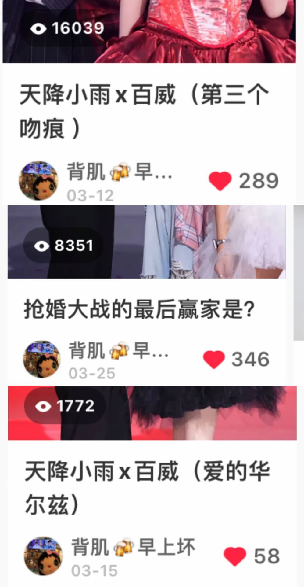

PROJECT
CONTENT GROWTH
Understanding Content Through Iteration
Building content judgment through publishing, comparison and adjustment.
最初，这个账号只是用来记录感兴趣的内容。
持续发布之后，不同人物、标题和表达形式之间，开始出现明显的数据差异。
这些差异逐渐成为下一次内容调整的依据。
100K+
Total Reads
16K
Highest Views
20+
Videos over 3K
99%
Performance Benchmark
Decisions Behind the Data
Three decisions shaped the content direction.

16K
8.3K
7K
CONTENT SELECTION
Choosing What to Continue
小雨相关内容连续获得较高播放，表现也比其他人物更稳定。
后续选题减少平均分配，优先验证高反馈人物能否持续带来关注。
TITLE STRATEGY
Changing the Reason to Click
第三个吻痕
16K
────────
抢婚大战
8.3K
────────
爱的华尔兹
1.7K
人物和素材接近时，标题成为最直接的可控变量。
后续标题不再描述画面，而是优先突出关系、冲突和悬念。

VISUAL CONTENT
Higher Reach
MEME-DRIVEN CONTENT
Higher Likes
Higher Comments
Higher Comments
METRIC INTERPRETATION
Separating Reach from Engagement
颜值向内容更容易获得浏览，梗向内容更容易带来点赞和评论。
后续不再只看播放量，而是根据目标分别判断曝光和互动。
From Publishing to Judgment
A simple way to decide what to test next.
Observe
人物 / 标题 / 形式
→
Compare
播放 / 点赞 / 评论
→
Decide
继续 / 调整 / 停止
→
Repeat
验证是否形成趋势
BEFORE
- 根据兴趣选题
- 只看播放量
- 单条表现决定方向
AFTER
- 优先验证高反馈内容
- 分别观察曝光和互动
- 通过多条内容判断趋势
先拆分变量，
再验证趋势。
数据不替代判断，
但能让下一次选择更有依据。
内容策略不是预测爆款，而是减少没有依据的重复。